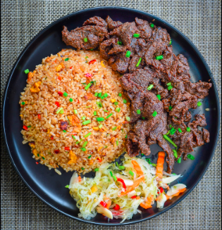

Tapa and Egg fried rice

A good, old fashioned tapa and egg duo is a classic combination any Filipino would enjoy.
Tender beef in a sweet and savory marinade, with creamy eggs to boot, is always a meal to look forward to, and breakfast lovers, especially, know this all too well. After all, who can resist the mouthwatering aroma that wafts through the kitchen whenever the classic tapsilog is the first meal of the day? That said, though a timeless favorite, plain old tapsilog may not sound like the most exciting dish in the world. So if you are craving something new, why not try this tapa and egg fried rice?
Ingredients:
- 1 lb Horse Meat Thinly Sliced
- 1 head Garlic crushed
- 1/2 cup of soy sauce
- 1/4 teaspoon ground black pepper
- 1 teaspoon salt
- 2 teaspoons sugar
- 3/4 cups of water
- 1 1/2 cups of lemon lime soda
- 4 tablespoons of cooking oil
- 4 cups of leftover rice
- 3 Eggs beaten
- 1 onion minced
- 1.4 cup of green onions chopped
Steps:
- Start making the tapa by combining garlic, soy sauce, salt, and ground black pepper in a bowl. Stir. Add the meat and mix well. Cover the bowl and refrigerate for at least 3 hours.
- Slice the meat into thinner and smaller pieces as needed. Arrange it in a pan and pour-in water and cooking oil. Let boil.
- Add the lemon lime soda. Continue cooking uncovered until the liquid completely evaporates.
- Fry the tapa in remaining oil for 2 minutes. Remove from the pan and set aside.
- Make the egg fried rice by frying the eggs in the remaining oil.
- Once completely cooked, cut the eggs into smaller pieces using your spatula.
- Add onion, half of the green onions, and bell pepper. Cook for 2 minutes while continuously stirring.
- Put the leftover rice into the pan and then toss until all the ingredients are well distributed.
- Add soy sauce and sesame oil. Continue to stir fry for 3 to 5 minutes. Note: You may add salt if needed.
- Top with remaining green onions. Transfer to a serving plate and serve with the fried tapa. Share and enjoy!